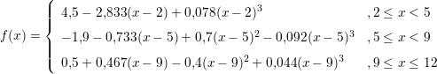

7.2 Problemas de valor contorno
Nesta seção usaremos a aproximação numérica da derivada para resolver
problemas de valor de contorno da forma

Resolver numericamente o problema acima exige uma discretização do domínio
[a,b], ou seja, dividir o domínio em
N partes iguais, definindo
O
conjunto de abcissas
xi,
i = 1,...,N + 1 formam uma malha para o problema
discreto. Nosso objetivo é encontrar as ordenadas
ui = u(xi) que satisfazem a
versão discreta:

O
vetor solução
(ui)i=1N+1 do problema é solução do sistema acima, que é linear se
f for linear em
u e não linear caso contrário.
Exemplo 7.2.1. Encontre uma solução numérica para o problema de
contorno:

Solução. Observe que

e a versão discreta da equação é

ou seja,
 que é um sistema linear. A sua forma matricial é:

Para
N = 10, temos a seguinte solução:
 ♢
♢